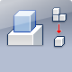

Inventor FeatureMigrator
The FeatureMigrator tool has been developed to allow Inventor users to more easily create part features from assembly features.
Getting Started
To launch the plug-in, use the following command(s)
Feature Migrator
Launches the Feature migration process.
Usage
Once installed, the FeatureMigrator add-in will create a new button in the “Tools” Tab of the Assembly Ribbon (an assembly document needs to be active).
When pressing this button, the FeatureMigrator add-in will display a new browser in the Inventor Browser Pane. This browser will display only the supported features for migration in the active assembly.
At this point only the following assembly features are supported for migration:
- ExtrudeFeature
- HoleFeature
- CircularPatternFeature (only patterning Extrude and Hole)
- RectangularPatternFeature (only patterning Extrude and Hole)
See the screenshots for a more detailed description of the FeatureMigrator control:
Migrating Assembly Features to Parts
The user can migrate assembly features either by selecting them in the FeatureMigrator browser: by right-clicking on one or several of them, then use the “Send to Parts” commands. Features can also be directly migrated from the regular Inventor Model browser: using the context menu item added by the add-in. In that case, the context menu item will be available only if the selection contains only features and if they are all of a supported type mentioned above.
When migrating an assembly feature to the parts, the FeatureMigrator will create a copy of the affected part documents and replace the original part by this copy for each occurrence affected by the assembly feature: an assembly feature can affect several occurrences of the same part differently, so the operation will often end up with more copies than original documents.
When creating a copy of a Part, the FeatureMigrator will use by default the name of the occurrence to generate a new file name. If a file with the same name exists on the disk, this file will be replaced by the copy automatically, unless it is referenced by an existing Inventor document: for example the generated filename is ‚Ä
Part1_1.ipt ‚Äù. This file already exists at the same location and is referenced by a drawing file ‚Ä
Part1_1.idw ”. In this situation, the FeatureMigrator will display the “File Overwrite” dialog, prompting the user for a new name to affect to the generated copied part.
The “File Overwrite” dialog also informs about which documents are referencing the concerned part.
Feature Migration Results
Once the operation of migrating features is completed, the FeatureMigrator will display a dialog that provides information about the results: This first dialog is a “high-level” report of the migration. It provides the opportunity for the user to select the action to take for all the assembly features migrated {Suppress if Succeeded, Suppress always, Delete if Succeeded, Delete always or Nothing}, also for the part features that haven’t been migrated correctly {Suppress, Delete or Nothing} (Features created by the add-in can be in an invalid state in the parts for a number of reasons).
The high-level report dialog also provides access, through “Detailed Report” button, to a much more detailed report dialog.
In this second dialog, the result of the migration of each selected assembly feature can be visualized: It provides details about the status of each part feature (and the ability to set an individual action for each feature {Suppress, Delete or Nothing}), the documents that were generated to replace the assembly occurrences affected and the documents that became unreferenced as a result of the operation (those documents can be deleted upon user selection).
Associativity Between Part & Assembly Features
Associativity is controlled by the browser available in the Part document, displayed by activating the command under Tools Tab -> FeatureMigrator Panel -> Controller button.
This browser will list all the existing features resulting from a migration by the tool and that are of supported type for associativity (only hole & extrude at the moment: holes & extrusions resulting from migration of a pattern won’t be supported for associativity).
The update is not automatic (upon opening the part) but has to be performed by the user: « Update from Assembly » context item.
In case the assembly file cannot be located
i.e. location or filename has changed), a file resolution dialog will be displayed, prompting the user to find the original assembly file. If the assembly cannot be located, the features won’t be updated.
Screenshots
Annotated FeatureMigrator browser.
Sending Assembly features to the relevant Parts.
The 'File Overwrite' Form.
Migration Summary.
Detailed migration report.
Status of the various features after migration.
Installation and Uninstallation
You can unload the plugin without installing it by unchecking the
"Load" checkbox associated with the plugin in the Inventor Add-In Manager.
Unchecking "Load on Startup" cause the plugin not to be loaded in future sessions of Inventor.
To remove the plugin completely, uninstall the application via your system's Control Panel.
Additional Information
The source code for this app has been provided as a Visual Studio 2008 project containing C# code (not required to run the plugin).
(C) Copyright 2010 by Autodesk, Inc.
Permission to use, copy, modify, and distribute this software in
object code form for any purpose and without fee is hereby granted,
provided that the above copyright notice appears in all copies and
that both that copyright notice and the limited warranty and restricted
rights notice below appear in all supporting documentation.
AUTODESK PROVIDES THIS PROGRAM "AS IS" AND WITH ALL FAULTS.
AUTODESK SPECIFICALLY DISCLAIMS ANY IMPLIED WARRANTY OF MERCHANTABILITY OR
FITNESS FOR A PARTICULAR USE. AUTODESK, INC. DOES NOT WARRANT THAT THE
OPERATION OF THE PROGRAM WILL BE UNINTERRUPTED OR ERROR FREE.
Known Issues
This plugin was written by Philippe Leefsma.
Philippe is a Developer Consultant at Autodesk, working as part of the Autodesk Developer Network program.
Support Information
Email us at
labs.plugins@autodesk.com with feedback or requests for
enhancements.
Version History